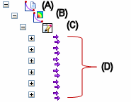
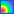

Displaying and modifying the optimization results
Understanding the optimization icons in the Simulation pane
The Optimizations collector only appears in the Simulation pane after you select the
New Optimization command  and define at least one parameter in the Optimization dialog box.
and define at least one parameter in the Optimization dialog box.
-
The Optimizations collector (A) is displayed below the Results node. All optimizations of the study are stored in the same collector.
-
The Optimize command, which is available on the shortcut menu and as a button in the Optimization dialog box, solves the simulation and produces the first optimization in the study, labeled Optimization 1 node (B).
-
The Optimization 1 Results (C) are published for each processing iteration (D)

Displaying the optimization results
Successful optimization processing applies the last solution found (the last iteration) to the study geometry and updates the model. When processing completes, it displays a convergence status message, where convergence refers to a solution that falls within the optimization requirements. You can then select the View Plots button or the View Spreadsheet button in the dialog box to see the results immediately.
For each optimization, you can use shortcut commands to review the results of the optimization, to edit the optimization variables, and review the changed geometry at each processing iteration. The shortcut commands are available based on their location under the Optimizations collector in the Simulation environment.
|
Displaying the optimization results |
||
|
You can |
With this shortcut command |
Available at this location |
|
Display an optimized result plot. |
View |
Optimization 1→Results→Iteration 1→Plots node  →Displacement→Total Translation. |
|
Display the optimization results in spreadsheet format. |
View Summary |
Results node |
|
Display the result plots in the Simulation Results environment. |
View Plots |
Results node |
|
See the optimized geometry for the converged solution. |
Show Modified Geometry Note:
The design variables from the last (final) iteration are applied to the simulation study geometry. |
Optimization 1 node |
|
See how a specific optimization iteration changes the study geometry. Example:
Even though solving the optimization updates the study geometry with the results of the last iteration, for example, Iteration 6, you still can see how a different iteration would affect the model using the Show Geometry command. |
Show Geometry Note:
The design variables from the selected iteration are applied to the simulation study geometry. |
Iteration 1, Iteration 2,... node |
In the optimization spreadsheet:
-
The Summary sheet shows the optimization variables and the results for each processing iteration. Values shown in red are those which exceeded the design limits.
-
The Graph sheet charts the objective across each iteration.
Example:The optimization summary graph, Mass vs. Iteration, shows how Mass (Y axis) changes with each Iteration (X axis).

You also can review the results of the optimization in the Simulation Results environment using all of the standard animation and plot display commands.
Modifying optimized study geometry
After you solve an optimization, you can modify the optimization and reapply it to the study geometry using these shortcut commands.
|
Modifying optimized study geometry |
||
|
You can |
With this shortcut command |
Available at this location |
|
Create a new optimization scenario for the study. There can be multiple optimizations of a single study. Example:
If Optimization 1 is an analysis of how the stress changes as the thickness changes, you may want to create another optimization, Optimization 2, to compare stress changes to changes in the bend radius. |
New Optimization Note:
Creates the Optimizations collector in the Simulation pane if this is the first optimization. |
|
|
Solve the study optimization using the parameters defined in the Optimization dialog box. Note:
If a variable used in an optimization is changed, or overridden, the study goes out of date. |
Optimize |
Selected Optimization node |
|
Change a variable or parameter in the Optimization dialog box, and then update the results. |
Edit Optimization |
Selected Optimization node |
|
Return the changed geometry to its pre-optimization state. |
Reset Geometry Note:
The design variables from the first iteration are applied to the simulation study geometry. |
Selected Optimization node |
|
Undo the most recent command, but you cannot undo the Optimize command. |
Undo |
Quick Access Toolbar |
Optimization status messages
A successful optimization is when a converged solution is achieved and a convergence status dialog box is displayed.
If optimization processing does not complete because you cancel the optimization process or if an error message is displayed, all valid iterations that have been completed are saved.
You can use the Convergence Parameters tab in the Optimization dialog box to allow some flexibility in the optimization variables.
How do I
Minimize the mass of a part with design optimizationLearn more
Optimizing study resultsBest practices for design optimization
Defining design optimization parameters
How overriding properties affects design optimization
Look up more details
Design Objective (Optimization dialog box)Design Limits (Optimization dialog box)
Design Variables (Optimization dialog box)
Control Parameters (Optimization dialog box)
Convergence Parameters (Optimization dialog box)
Design Limit/Design Variable Rule Editor
Convergence status dialog box